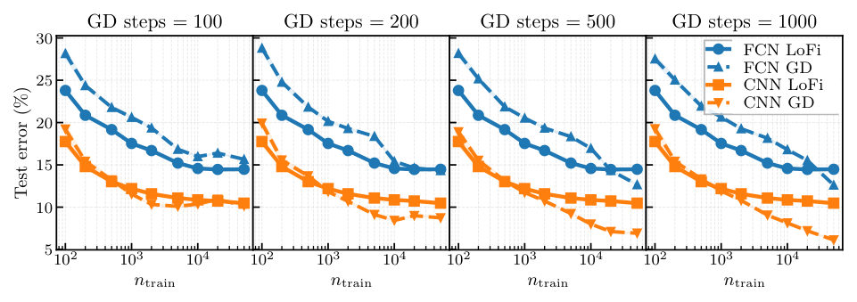

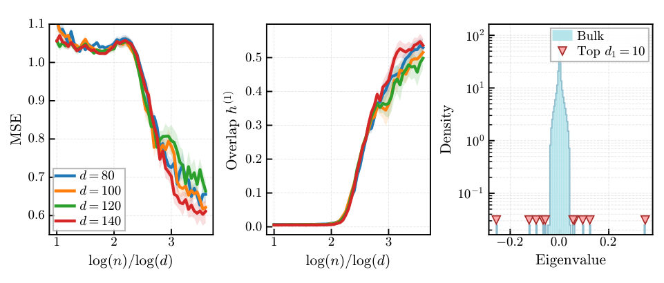
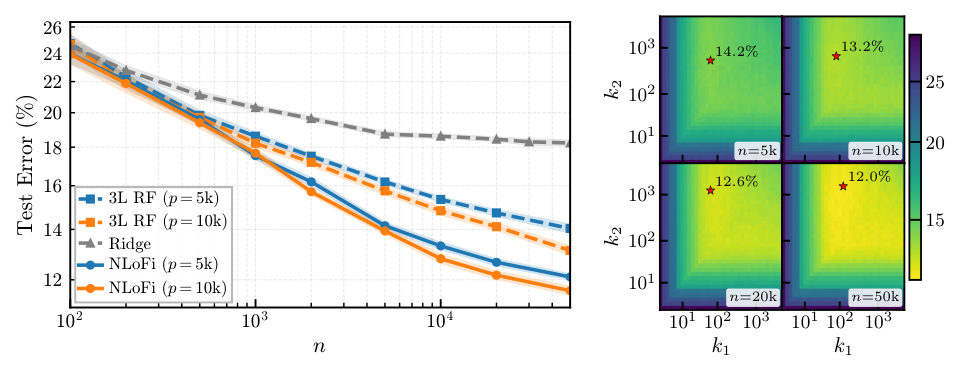
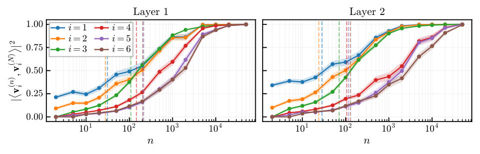
← Index · ← Previous · Next →
Authors: Nilaj Saha, Sumit Mukherjee, Dipankar Home
Type: both · Category: quantum information and computing · PDF: https://arxiv.org/pdf/2605.13350v1
Analysis basis: full PDF text, analyzed in chunks
Topic relevance: entanglement & information structure 3/5 · quantum measurements 2/5
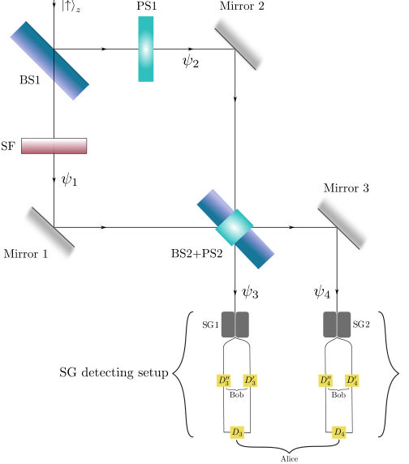
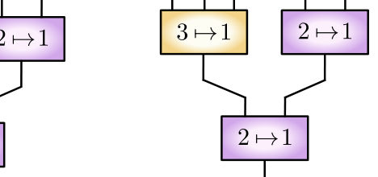
Summary. This paper demonstrates that the increase in success probability in quantum Random Access Code protocols is quantitatively tied to the violation of single-particle noncontextuality inequalities. By using intraparticle entanglement between path and spin, the authors show that the quantum advantage scales directly with the strength of the underlying quantum resource. This establishes a measurable, fundamental connection between communication complexity and quantum contextuality.
Why it may be interesting. It provides a fundamental link between information-theoretic tasks (RAC) and quantum foundations (contextuality), showing how single-particle resources can be used to quantify quantum advantage, which is highly relevant to quantum optics and quantum information processing.
Main problem. The paper aims to establish a quantitative correspondence between the quantum advantage in Random Access Code (RAC) protocols and the magnitude of intraparticle entanglement-based contextuality violations.
Main result. The authors prove that the enhancement in success probability for n-to-1 RAC protocols is directly commensurate with the violation of single-particle noncontextuality Bell-type inequalities, providing a universal relation between success probability and the Bell-type parameter.
Method. The study uses an algebraic isomorphism between path and spin Hilbert spaces to map RAC protocols onto Bell-CHSH-type inequalities, employing a concatenation scheme to generalize results from 2-to-1 and 3-to-1 subunits to n-to-1 protocols.
Model / system. The physical model involves single-particle systems utilizing intraparticle entanglement between co-measurable degrees of freedom, such as path and spin/polarization, implementable via Mach-Zehnder interferometry or photonic setups.
Key observables. Success probability (P), Bell-type correlation variables (C_n), and detector counts in interferometric setups.
Important parameters / regimes. n-bit encoding (n-to-1), quantum advantage (delta P), and the magnitude of noncontextuality violation (beta).
Assumptions / limitations. The derivation assumes the validity of noncontextuality for single-particle path-spin measurements and the mathematical equivalence between intraparticle and interparticle entanglement descriptions.
Figures summary. Figure 2 shows schematic diagrams of 2-to-1 and 3-to-1 RAC subunits and examples of 4-to-1 and 5-to-1 protocol concatenations.
Paper structure. The paper introduces the problem of RAC enhancement, establishes the classical bounds using noncontextuality, develops the quantum framework using intraparticle entanglement, provides a mathematical mapping via Hilbert space isomorphism, generalizes the result to n-bit protocols via concatenation, and discusses experimental feasibility.
The quantum enhancement of success probability in the Random Access Code (RAC) protocols remains unexplored from two important perspectives. First, the use of entanglement between two co-measurable degrees of freedom of a single particle (intraparticle entanglement) in achieving such quantum enhancement has not been investigated. Second, no explicit quantitative correspondence has been established between the predicted/observed quantum advantage and the underlying quantum resource responsible for it. In this work, we address both these aspects simultaneously by harnessing a single-particle resource. For this purpose, the RAC protocol is formulated in terms of intraparticle entanglement between, for instance, spin/polarization and path degrees of freedom of a single particle. Within this framework, a relevant Bell-type inequality, derived from the assumption of noncontextuality for single particle path-spin measurements, is used. Based on these ingredients, the formulated analysis reveals that the magnitude of quantum-mechanical violation of such Bell-type inequality, signifying a form of quantum contextuality, is quantitatively commensurate with the quantum enhancement of success probability in any intraparticle entanglement-assisted $n$-bit RAC protocol. In particular, the maximal success probability of a quantum $n \mapsto 1$ RAC protocol corresponds to the maximal quantum violation of the relevant Bell-type inequality. This correspondence is empirically testable using a readily implementable single-particle interferometric setup requiring coherence preservation only for a single particle.
Authors: Jȩdrzej Stempin, Gerard Anglès Munné, Santiago Llorens, Felix Huber
Type: theory · Category: quantum information and computing · PDF: https://arxiv.org/pdf/2605.13832v1
Analysis basis: full PDF text, analyzed in chunks
Topic relevance: entanglement & information structure 3/5
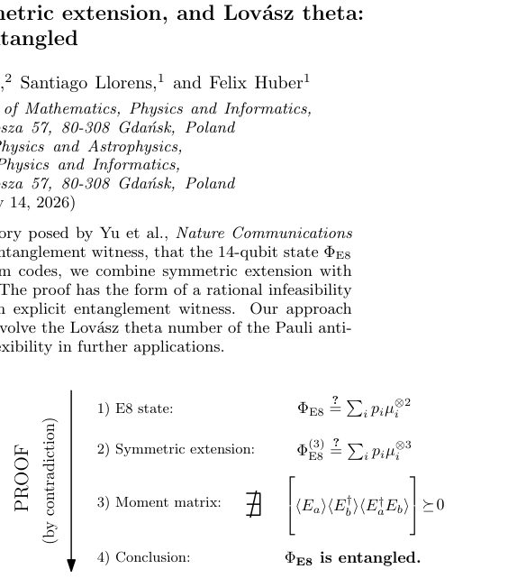
Summary. This paper solves a long-standing open problem by proving that the 14-qubit state Phi_E8 is entangled. By combining symmetric extensions with moment matrices and graph theory, the authors provide an explicit, mathematically rigorous entanglement witness. This method offers a scalable framework for detecting entanglement in complex multipartite systems.
Why it may be interesting. not directly relevant
Main problem. The paper aims to solve an open problem by providing an explicit entanglement witness to prove that the 14-qubit state Phi_E8 is entangled.
Main result. The authors successfully prove the entanglement of the Phi_E8 state by providing a rational infeasibility certificate for a semidefinite program, effectively constructing an operational entanglement witness.
Method. The approach combines the symmetric extension hierarchy with the non-commutative optimization hierarchy (moment matrices) and utilizes symmetry reduction via the Terwilliger algebra to make the semidefinite program (SDP) computationally tractable.
Model / system. The system is a 14-qubit multipartite state, Phi_E8, which is constructed from projectors onto symmetric and antisymmetric subspaces of qubit pairs and is related to the existence of AME(7,2) states.
Key observables. The entanglement witness W_Phi_E8, derived from the Lovasz theta number of the Pauli anti-commutativity graph.
Important parameters / regimes. The weight of Pauli strings, the anti-commutativity graph G_4+, and the weight threshold delta = 4.
Assumptions / limitations. The proof relies on a relaxation of the SDP via group averaging, though the authors note that infeasibility of the relaxed version implies infeasibility of the original.
Figures summary. Figure 1 provides a visual summary of the proof sketch, showing the transition from a putative separable state to a constrained three-copy extension.
Paper structure. The paper introduces the problem of Phi_E8 entanglement, describes the construction of the symmetric extension and moment matrix, details the symmetry reduction and SDP formulation, presents the numerical infeasibility certificate, and concludes with the construction of the explicit entanglement witness.
We solve an open problem in entanglement theory posed by Yu et al., {\it Nature Communications 12, 1012 (2021)}. The problem is to show, via an entanglement witness, that the $14$-qubit state $Φ_{\text{E8}}$ is entangled. Inspired by a method from quantum codes, we combine symmetric extension with moment matrices to prove that $Φ_{\text{E8}}$ is entangled. The proof has the form of a rational infeasibility certificate for a semidefinite program, yielding an explicit entanglement witness. Our approach unifies and extends several earlier methods that involve the Lovász theta number of the Pauli anti-commutativity graph, promising scalability and flexibility in further applications.
Authors: Rui Cao, Xiangyue Zhang, Hui Tan, Jian-Shu Xu, Yuan-Yao He, Jianmin Yuan, Yongqiang Li
Type: theory · Category: strongly correlated electrons · PDF: https://arxiv.org/pdf/2605.13837v1
Analysis basis: full PDF text, analyzed in chunks
Topic relevance: analog quantum simulation 3/5
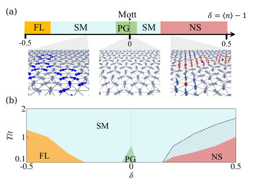
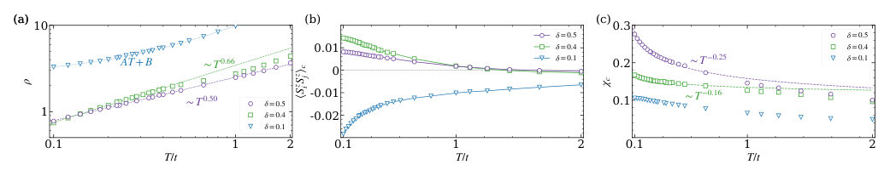
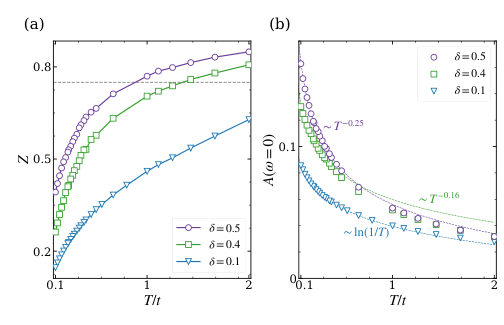
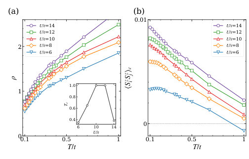
Summary. The paper identifies a new quantum state called the Nagaoka supermetal in the particle-doped triangular Hubbard model. This state arises from an interaction-induced higher-order Van Hove singularity that causes anomalous transport properties like sublinear resistivity. The findings provide a new perspective on non-Fermi liquid behavior in geometrically frustrated systems.
Why it may be interesting. The discovery of an intrinsic, interaction-driven non-Fermi liquid state with power-law divergences is highly relevant to many-body dynamics and is directly accessible in ultracold atom experiments.
Main problem. Understanding the nature of the metallic state emerging upon particle doping in a frustrated Mott insulator and identifying the origin of its non-Fermi liquid behavior.
Main result. Discovery of the 'Nagaoka supermetal' state, characterized by sublinear temperature-dependent resistivity and power-law divergences in charge compressibility, driven by an interaction-induced higher-order Van Hove singularity.
Method. Dynamical Cluster Approximation (DCA) using a continuous-time hybridization expansion solver, supplemented by second-order perturbation theory and effective low-energy Hamiltonian derivation.
Model / system. The two-dimensional triangular-lattice Hubbard model in the strongly correlated regime (U/t = 12), specifically focusing on the particle-doped regime.
Key observables. DC resistivity, charge compressibility, zero-frequency spectral weight, density of states, and nearest-neighbor spin correlation functions.
Important parameters / regimes. Interaction strength (U/t = 12), doping level (delta), temperature (T/t), and kinetic renormalization factor (Z).
Assumptions / limitations. Neglect of vertex corrections in resistivity calculations and the use of the bubble approximation for transport properties; cluster size is limited to Nc <= 6 due to the fermion sign problem.
Figures summary. A phase map showing the transition from Mott insulator to various regimes (FL, SM, PG, NS) and a finite-temperature phase diagram demonstrating the robustness of the NS state.
Paper structure. The paper introduces the problem of doped Mott insulators, describes the Hubbard model and DCA methodology, presents the discovery of the Nagaoka supermetal and its transport signatures, derives the effective Hamiltonian and the higher-order Van Hove singularity mechanism, and concludes with implications for experimental observations.
While the interplay of correlations and geometric frustration in doped Mott insulators provides a fertile ground for exotic quantum phases, the nature of the metallic state emerging upon particle doping remains poorly understood. In this work, we investigate the triangular-lattice Hubbard model with particle doping and provide compelling evidence for an intrinsic, interaction-driven quantum state, which we term the Nagaoka supermetal. This state is characterized by a sublinear temperature dependence in the DC resistivity, along with singular behaviors in the charge compressibility and zero-frequency spectral weight. To understand the origin of these singular properties, we derive an effective low-energy model and demonstrate that a higher-order Van Hove singularity emerges from the reconstructed dispersion. This singularity gives rise to a power-law divergence in the density of states, capturing the anomalous properties observed in the supermetallic regime. Our findings offer a new perspective on non-Fermi liquid states in geometrically frustrated systems and are directly accessible in current ultracold atom experiments.
Authors: Niclas Höllrigl, Marian Kreyer, Rudolf Grimm, Emil Kirilov
Type: experiment · Category: quantum gases · PDF: https://arxiv.org/pdf/2605.13482v1
Analysis basis: full PDF text, analyzed in chunks
Topic relevance: analog quantum simulation 3/5
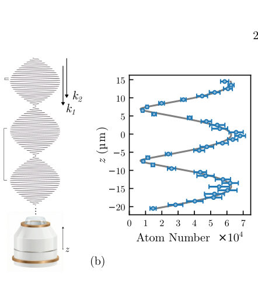
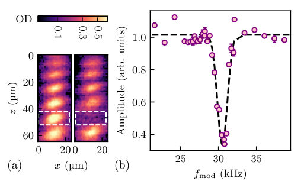
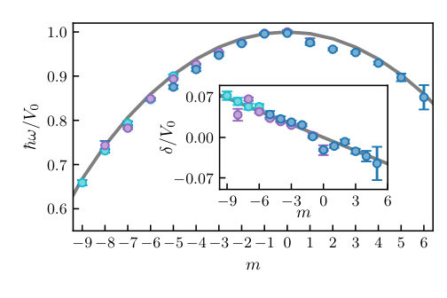
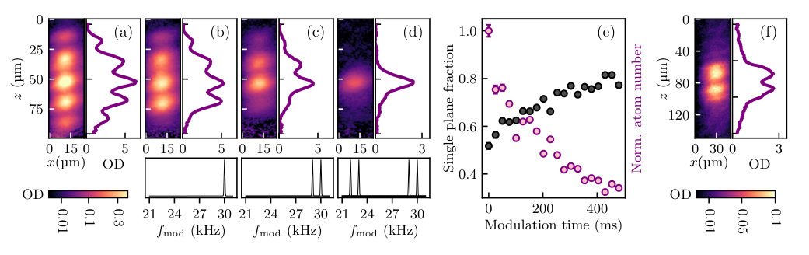
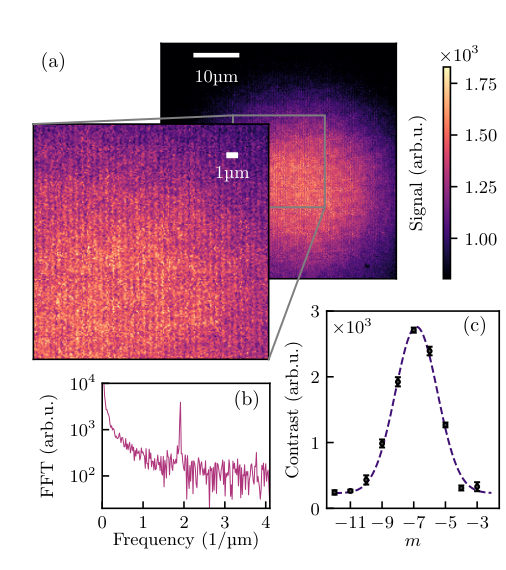
Summary. The researchers developed an all-optical method to precisely select single or double layers of Dysprosium atoms within a superlattice. By using parametric heating to remove unwanted layers, they achieved a stable platform for high-resolution microscopy of 2D dipolar gases. This technique is particularly useful for studying systems with strong long-range interactions.
Why it may be interesting. This work provides a robust, all-optical tool for preparing 2D layers in highly magnetic systems, which is essential for studying long-range dipolar interactions and Casimir-Polder forces in a controlled, single-atom-resolved manner.
Main problem. The difficulty of performing high-resolution microscopy on 2D dipolar quantum gases due to the challenge of selecting individual atomic layers, especially for lanthanide atoms where standard magnetic-gradient techniques are ineffective.
Main result. The demonstration of an all-optical method for the deterministic spatial selection of single- and bilayer samples of cold Dysprosium atoms using site-selective parametric heating in a beat-note superlattice.
Method. The researchers use a beat-note superlattice (BNSL) created by retroreflecting two collinear laser beams and apply site-selective parametric heating via amplitude modulation to remove atoms from unwanted planes.
Model / system. A 2D system of bosonic 164-Dy (Dysprosium) atoms in an optical beat-note superlattice (BNSL) with a tight-binding regime and site-dependent local band gaps.
Key observables. Atom number after heating, local excitation frequencies (local band gap), site-resolved contrast, and in-situ fluorescence imaging of the atomic cloud.
Important parameters / regimes. Lattice spacing of ~536.8 nm, axial confinement frequency of 25 kHz, initial temperature of 123 nK, and a wavelength ratio n approx 25 for the BNSL.
Assumptions / limitations. Assumes potential depth equality (V1 approx V2) and utilizes the harmonic oscillator approximation for the tight-binding regime.
Figures summary. Fig 1 shows the BNSL setup and atom number loading; Fig 2 shows absorption images and loss spectra after heating; Fig 3 shows the spatial variation of the local band gap; Fig 5 shows fluorescence imaging and lattice contrast measurements.
Paper structure. The paper introduces the problem of layer selection, describes the BNSL experimental setup, details the mechanism of site-selective parametric heating, demonstrates the preparation of single and bilayer planes, and concludes with characterization of the resulting 2D gases.
High-resolution microscopy of two-dimensional dipolar quantum gases requires selecting individual atomic layers, a task complicated for strongly magnetic lanthanide atoms by the limited applicability of standard magnetic-gradient techniques. We present an all-optical method for the deterministic spatial selection of single- and bilayer samples of cold dipolar atoms using spatially selective parametric heating within a beat-note superlattice. By utilizing a high-resolution microscope objective as a common retroreflector for both optical frequency components, the lattice planes are passively stabilized. This renders their positions exceptionally robust against experimental drifts and structure-borne vibrations, even eliminating the need for active laser stabilization over millimeter-scale separations from the reflecting surface. We validate this approach by demonstrating the robust isolation of one or two atomic layers in precise coincidence with the focal plane of our objective. This enables future single-atom-resolved studies of long-range interacting systems.
Authors: Simanshu Kumar, Nandan S Bisht
Type: theory · Category: quantum information and computing · PDF: https://arxiv.org/pdf/2605.13271v1
Analysis basis: full PDF text, analyzed in chunks
Topic relevance: correlated / nonlocal dissipation 2/5 · entanglement & information structure 2/5 · interference shaping light 2/5 · methods for driven-dissipative 2/5 · quantum measurements 2/5
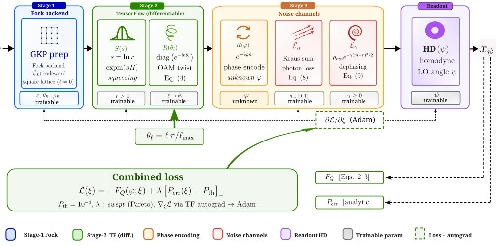
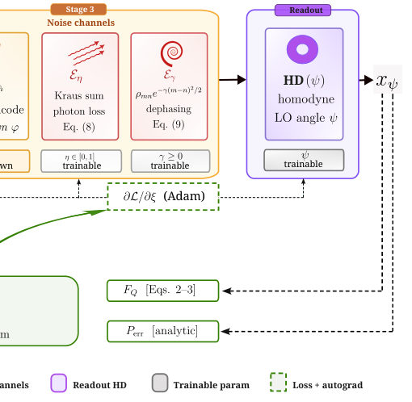
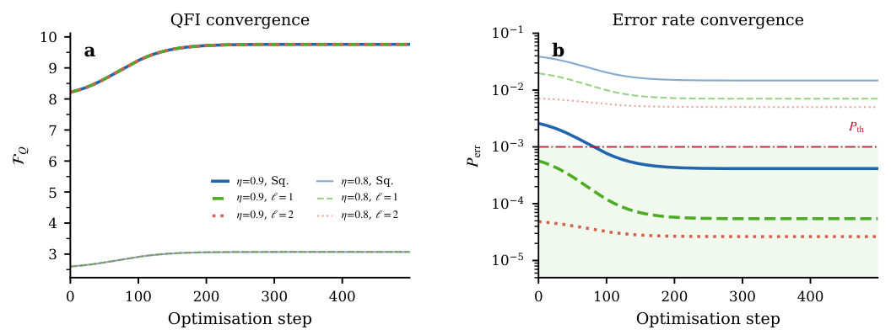
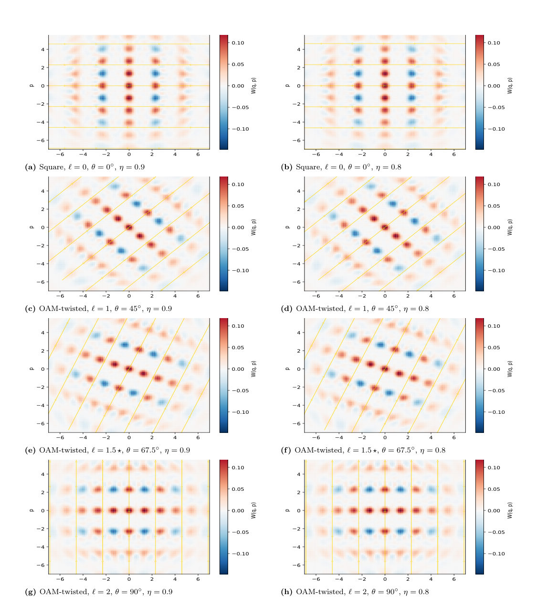
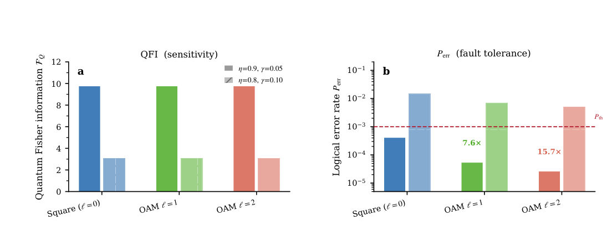
Summary. This paper shows that using fractional orbital angular momentum to rotate GKP lattices can significantly suppress logical errors in quantum sensing. By optimizing the lattice geometry to match the noise channel, the researchers achieved a 23.9-fold reduction in error rates without sacrificing sensing precision.
Why it may be interesting. It provides a geometric design principle for noise-adaptive quantum sensors, demonstrating how structural coupling between encoding (OAM) and error correction (GKP) can be exploited to enhance fault-tolerant metrology.
Main problem. Optimizing the geometry of GKP (Gottesman-Kitaev-Preskill) error-correcting codes to simultaneously maximize sensing sensitivity and maintain fault tolerance in the presence of asymmetric noise (photon loss and dephasing).
Main result. The discovery of a fractional optimal OAM charge of l=1.5 (theta=67.5 degrees) that reduces the logical error rate by 23.9x compared to a square lattice while maintaining nearly identical Quantum Fisher Information.
Method. An end-to-end differentiable programming framework using Strawberry Fields and TensorFlow to jointly optimize lattice rotation, aspect ratio, and energy envelope via gradient descent.
Model / system. Continuous-variable bosonic modes using GKP states in a phase-space lattice, subject to a photon-loss channel and an anisotropic dephasing channel.
Key observables. Quantum Fisher Information (QFI), Logical Error Rate (P_err), and Metrological Capacity (C).
Important parameters / regimes. OAM topological charge (l), lattice rotation angle (theta), lattice aspect ratio (r), photon loss transmissivity (eta), and dephasing rate (gamma).
Assumptions / limitations. The derivation assumes the fault-tolerant regime where error probabilities are small; the model uses a Fock-space truncation (D=30).
Figures summary. Training convergence for QFI and error rates, visualizations of Wigner functions showing interference fringes and noise impact, and performance comparisons of error reduction across different OAM charges.
Paper structure. Introduction to GKP sensing optimization; description of the OAM-induced lattice rotation mechanism; presentation of the differentiable optimization framework; results showing the fractional optimum and error reduction; analytical derivation of the optimal angle and its monotonicity; discussion of experimental implementation routes and robustness.
Photon loss and dephasing rapidly degrade the sensitivity of quantum sensors, yet systematic methods for designing error-correcting codes whose geometry is simultaneously adapted to the sensing task and the noise channel do not exist. Here we establish that orbital-angular-momentum (OAM) encoding and Gottesman-Kitaev-Preskill (GKP) lattice geometry are structurally coupled: an OAM mode of topological charge $\ell$ induces a phase-space rotation $θ_\ell=\ellπ/\ell_{\max}$, corresponding to a family of twisted GKP stabilizer lattices. Using an end-to-end differentiable Strawberry Fields--TensorFlow circuit, we jointly optimise $\ell$, the lattice aspect ratio $r$, and the finite-energy envelope $ε$ to maximise quantum Fisher information subject to $P_{\rm err}\leq10^{-3}$. The optimum occurs at the fractional charge $\ell=1.5$ ($θ=67.5^\circ$), implementable with a half-integer spiral phase plate, which reduces $P_{\rm err}$ by $23.9\times$ relative to the square-lattice baseline while leaving $\mathcal{F}_Q$ unchanged to within $0.2\%$. This surpasses the best integer value ($\ell=2$, $15.7\times$) and arises from an exact $180^\circ$ periodicity of the $P_{\rm err}(θ)$ landscape, confirmed analytically and numerically. We derive a transcendental balance equation for the optimal angle $θ^*(η,γ,r)$ and prove that it decreases with both $γ$ and $η$. A Shannon-inspired metrological capacity $\mathcal{C}=\mathcal{F}_Q\cdot(-\ln P_{\rm err})$, maximised at $\ell=1.5$ with a $41\%$ gain over the square lattice, quantifies the joint sensitivity--fault-tolerance resource. These results establish a geometric design principle for noise-adaptive quantum sensors and a fully open-source differentiable template extensible to other bosonic code families.
Authors: Clemens Jakubec, Aaron Bartleson, Peter W. Milonni, Kanu Sinha
Type: theory · Category: other · PDF: https://arxiv.org/pdf/2605.13677v1
Analysis basis: full PDF text, analyzed in chunks
Topic relevance: Keldysh / 2PI / non-Gaussian methods 2/5 · correlated / nonlocal dissipation 2/5 · methods for driven-dissipative 2/5 · non-equilibrium dynamics 2/5
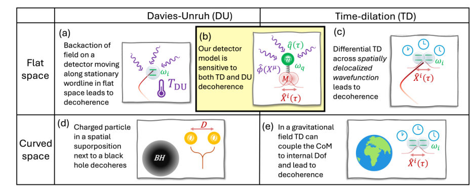
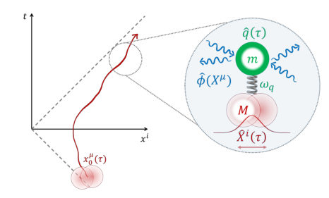
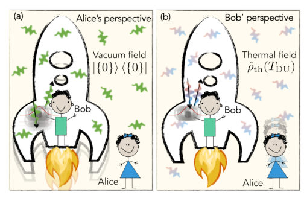
Summary. This paper analyzes how a particle's spatial superposition decays due to relativistic effects while moving along non-inertial paths. It distinguishes between decoherence caused by the thermal-like Unruh effect and that caused by gravitational time dilation. The findings show that both effects contribute to the loss of quantum coherence and the emergence of new dispersive forces.
Why it may be interesting. It provides a fundamental link between relativistic effects (Unruh effect and time dilation) and open quantum system dynamics, specifically how spacetime geometry induces decoherence and forces in a quantum particle.
Main problem. The paper investigates the mechanisms of decoherence and the emergence of dispersive potentials for the center-of-mass motion of a particle moving along stationary, non-inertial worldlines in the Minkowski vacuum.
Main result. The authors identify two distinct decoherence components: one arising from the Davies-Unruh effect (field spectrum modification) and another from differential time dilation across the particle's spatial wavefunction.
Method. The study employs a quantum Brownian motion master equation derived under the Born-Markov approximation, utilizing spectral decomposition of field operators and a separation of time scales between internal and external dynamics.
Model / system. A polarizable particle with an internal oscillator (internal degree of freedom) and a quantized center-of-mass motion (external degree of freedom) interacting with a 3+1 dimensional scalar field.
Key observables. Decoherence rates (Davies-Unruh and time-dilation components), momentum diffusion, dissipation, and dispersion potentials.
Important parameters / regimes. Local acceleration, redshift factor, Davies-Unruh temperature, and the ultra-relativistic limit for circular motion.
Assumptions / limitations. Stationary worldlines, separation of time scales between internal and external dynamics, Born-Markov approximation, and the particle's center-of-mass wavefunction is sufficiently localized.
Figures summary. Figure 1 compares decoherence mechanisms in different spacetimes; Figure 2 provides a schematic of the particle model; Figure 3 illustrates the two physical perspectives of decoherence (inertial vs. co-moving).
Paper structure. The paper begins by defining the particle model and interaction, proceeds to derive an effective red-shifted polarizability, constructs a quantum Brownian motion master equation, and concludes by evaluating specific cases of hyperbolic and circular motion.
We analyze the decoherence of a particle's spatial superposition moving along a stationary worldline through the Minkowski vacuum. The particle is modeled via an internal degree of freedom that couples to a scalar field, and an external degree of freedom, i.e., its quantized center-of-mass motion around the stationary worldline. Assuming a separation of time scales between the particle's internal and external dynamics, we first obtain an effective red-shifted polarizability of the particle, characterizing the trajectory-dependent linear response of the internal oscillator to the field. We then derive a quantum Brownian motion master equation for the particle's center of mass, under the Born-Markov approximation, which describes its decoherence in the position basis, as well as, Hamiltonian modifications corresponding to a dispersive potential. The resulting decoherence has two components: (1) arising from a modified field spectrum observed by the particle; and (2) due to a differential time-dilation over the particle's extended spatial wavefunction. For stationary trajectories, both contributions take an effectively thermal form. We evaluate the decoherence rates for two specific cases of hyperbolic and uniform circular motion.
Authors: Yatin Dandi, Matteo Vilucchio, Luca Arnaboldi, Hugo Tabanelli, Florent Krzakala
Type: both · Category: disordered systems and neural networks · PDF: https://arxiv.org/pdf/2605.13612v1
Analysis basis: full PDF text, analyzed in chunks
Topic relevance: driven-dissipative phase transition 2/5 · non-equilibrium dynamics 2/5 · non-equilibrium universality 2/5




Summary. This paper proposes a new theoretical framework called Neural LoFi to explain how deep neural networks learn hierarchical features. It treats deep learning as a sequence of spectral filtering steps, providing a mathematically tractable way to predict when specific features will emerge from data based on sample complexity.
Why it may be interesting. The use of spectral theory, phase transition analogies (BBP/EA transitions), and renormalization-like coarse-graining to describe feature evolution may resonate with researchers studying the dynamics of many-body systems and renormalization group flows.
Main problem. Understanding the mechanism of hierarchical feature learning in deep neural networks and predicting the sample complexity required for specific features to emerge.
Main result. The authors introduce Neural LoFi, a spectral surrogate that predicts feature emergence as a phase transition and demonstrates that depth allows networks to learn complex functions by decomposing them into low-degree transitions.
Method. The paper uses a spectral filtering framework (Neural LoFi) involving label-weighted moment operators and compares its performance and feature alignment to gradient descent and random feature baselines.
Model / system. The study utilizes a hierarchical polynomial toy model (Hermite feature space), fully connected networks, and convolutional architectures applied to datasets like CIFAR-10 and CelebA.
Key observables. Population correlation, empirical noise floor, residual effective dimension, feature overlap/alignment, and eigenvalue spectrum of the signed covariance operator.
Important parameters / regimes. Layer depth (L), network width (p), number of retained features (k), training set size (n), and the relevance-complexity trade-off.
Assumptions / limitations. The theory assumes a layer-wise vanishing initialization (small-initialization limit), centered labels, and focuses on the early stages of gradient descent.
Figures summary. Figures compare Neural LoFi to Gradient Descent performance, show MSE drops and feature overlap increases at predicted sample complexity thresholds, and visualize learned convolutional filters like edge detectors.
Paper structure. The paper introduces the Neural LoFi framework, derives its mathematical properties and convergence in the infinite-width limit, provides a theoretical criterion for feature emergence, and validates the theory through experiments on toy models and real-world CNN/FCN architectures.
Understanding how deep neural networks learn useful internal representations from data remains a central open problem in the theory of deep learning. We introduce Neural Low-Degree Filtering (Neural LoFi), a stylized limit of gradient-based training in which hierarchical feature learning becomes an explicit iterative spectral procedure. In this limit, the dynamics at each layer decouple: given the current representation, the next layer selects directions with maximal accessible low-degree correlation to the label. This yields a tractable surrogate mechanism for deep learning, together with a natural kernel-space interpretation. Neural LoFi provides a mathematically explicit framework for studying multi-layer feature learning beyond the lazy regime. It predicts how representations are selected layer by layer, explains how emergence of concepts arises with given sample complexity,and gives a concrete mechanism by which depth progressively constructs new features from old ones through low-degree compositionality. We complement the theory with mechanistic experiments on fully connected and convolutional architectures, showing that Neural LoFi improves over lazy random-feature baselines, recovers meaningful structured filters, and predicts representations aligned with early gradient-descent feature discovery with real datasets.
Authors: Surachate Limkumnerd
Type: theory · Category: statistical mechanics · PDF: https://arxiv.org/pdf/2605.12972v1
Analysis basis: full PDF text, analyzed in chunks
Topic relevance: methods for driven-dissipative 2/5 · non-equilibrium dynamics 2/5 · quantum measurements 2/5
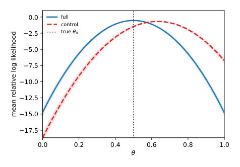
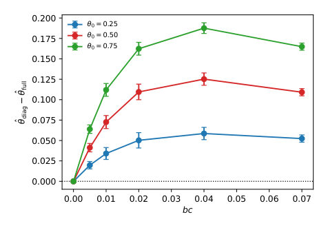
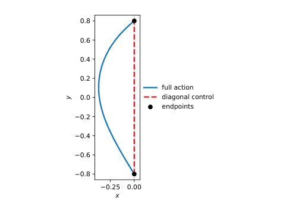
Summary. The paper reveals that in multidimensional systems with matrix-valued noise, a unique Jacobian term arises that is ignored in simpler scalar models. This term can significantly bias the estimation of stochastic calculus conventions and physically alter the predicted most-likely paths in a system.
Why it may be interesting. This is highly relevant for open quantum systems and many-body dynamics, as it shows that neglecting off-diagonal noise correlations can lead to incorrect physical conclusions about the underlying stochastic dynamics and transition paths.
Main problem. Investigating how matrix-valued multiplicative noise affects stochastic-calculus inference and the calculation of optimal paths in multidimensional systems.
Main result. The paper identifies a specific matrix-noise Jacobian term, J_sigma, that is absent in scalar-noise models and demonstrates that it causes measurable shifts in inferred stochastic prescriptions and deforms optimized transition paths.
Method. The author uses a finite-step path-likelihood framework, short-time expansions, and a variational Hamiltonian approach to derive and test the impact of the matrix-Jacobian term.
Model / system. The study uses multidimensional stochastic differential equations with multiplicative noise, specifically testing two models: Model A (a 2D system for inference validation) and Model B (a variational setting for path deformation).
Key observables. The matrix-noise Jacobian (J_sigma), the paired estimator shift (theta_diag - theta_full), and the deformation of the Onsager-Machlup optimal path.
Important parameters / regimes. The stochastic discretization parameter (theta), the noise-amplitude coefficients (b and c), and the time-step (delta t).
Assumptions / limitations. Assumes smooth coefficients, non-singular noise amplitude matrices, and the small time-step limit (delta t -> 0).
Figures summary. Figure 1 (not fully described) and Figure 3 show the most likely transition paths for Model B, visually demonstrating a 'bowing' effect caused by the matrix-Jacobian term.
Paper structure. The paper introduces the problem of matrix-noise ambiguity, formulates a path-likelihood framework, identifies the J_sigma term via short-time expansion, and then validates the findings through numerical inference tests (Model A) and variational path optimization (Model B).
Multiplicative noise makes stochastic dynamics depend on how the white-noise limit is interpreted. In multidimensional systems with matrix-valued noise amplitudes $σ(x)$, this dependence includes a local Jacobian contribution that is absent from the scalar examples most often used to build intuition. We formulate a finite-step path-likelihood framework for $θ$-discretized diffusions and show that its short-time expansion isolates the scalar $J_σ=\partial_jσ_{ik}\partial_iσ_{jk}-(\partial_iσ_{ik})(\partial_lσ_{lk})$. For a specified noise-amplitude representation $σ$, this quantity vanishes in one-dimensional, scalar-isotropic, and strictly diagonal cases, but can survive when state-dependent noise directions mix different components. We then test its consequences using paired comparisons that hold the drift, diffusion matrix, interpolation point, and Gaussian increment term fixed. In Model A, removing only the off-diagonal determinant contribution produces a shift in the fitted stochastic prescription that vanishes when $J_σ=0$. In Model B, removing the corresponding state-dependent action term changes a stable optimized transition path. These results show that a genuinely matrix-noise part of the short-time path measure can survive the scalar cancellations familiar from simpler settings and produce measurable changes in fitted stochastic prescriptions and Onsager--Machlup paths.
Authors: Karl Svozil
Type: theory · Category: quantum information and computing · PDF: https://arxiv.org/pdf/2605.12675v1
Analysis basis: full PDF text, analyzed in chunks
Topic relevance: correlated / nonlocal dissipation 2/5 · entanglement & information structure 2/5 · quantum measurements 2/5
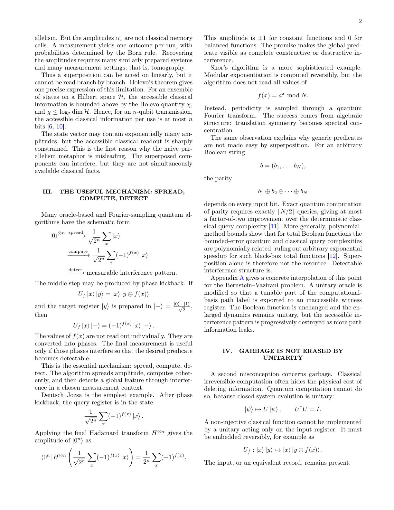
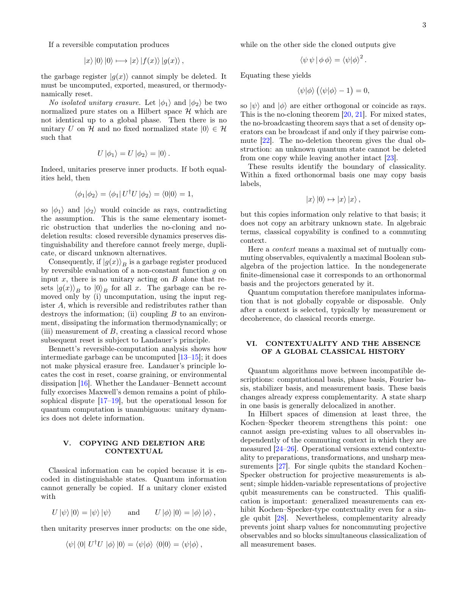
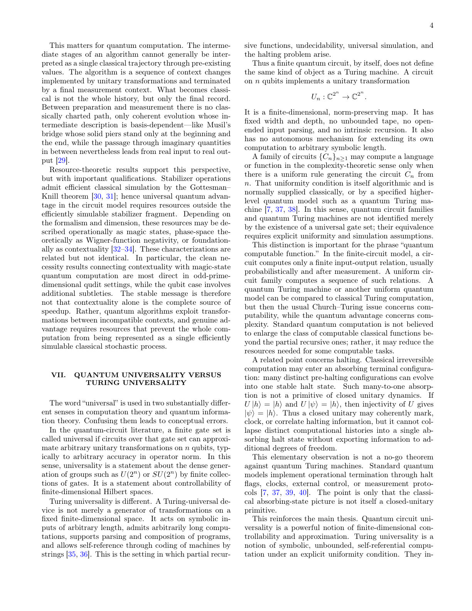
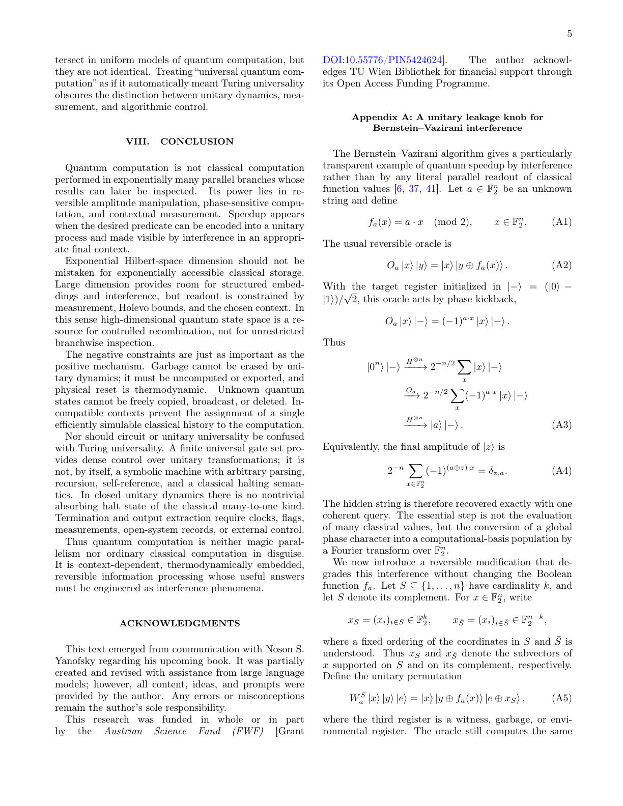
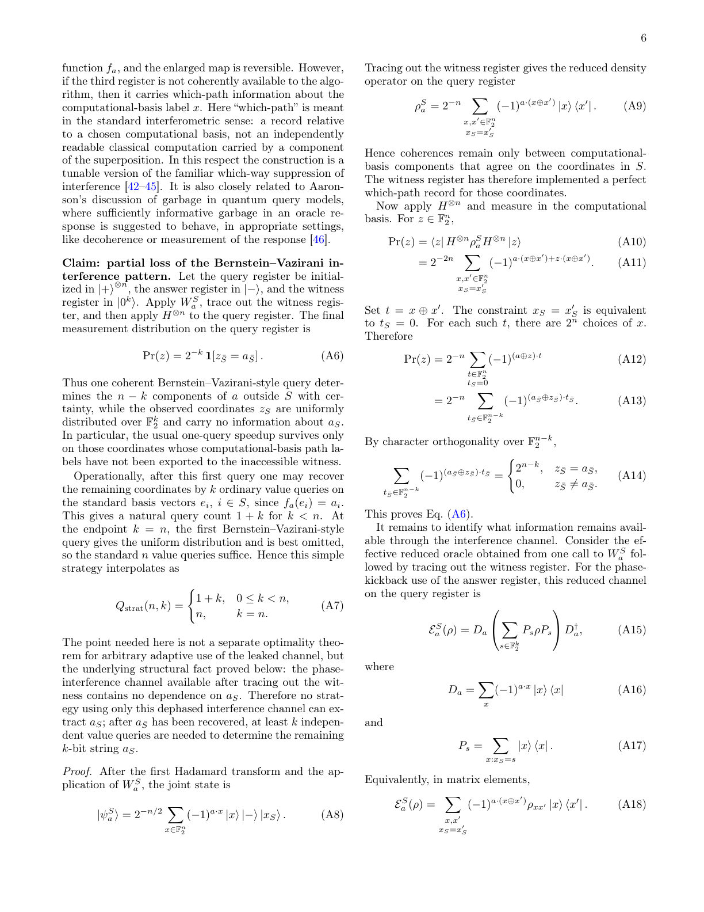
Summary. This paper refutes the idea that quantum computers work by performing many classical computations in parallel. Instead, it argues that speedup is a result of using interference to detect global algebraic structures, a process that is highly sensitive to any information leakage into the environment.
Why it may be interesting. It provides deep insights into how decoherence and environmental coupling (leakage) specifically quench the interference mechanisms required for quantum advantage, which is central to open quantum systems and quantum computing.
Main problem. The paper seeks to clarify the fundamental physical and contextual limits of quantum speedup, specifically debunking the misconception that quantum computing relies on 'branchwise parallelism' of classical computations.
Main result. The author demonstrates that quantum speedup arises from engineered interference patterns and algebraic embeddings rather than parallel classical branches, and that this speedup is destroyed if information leaks into an inaccessible environment (witness register).
Method. The paper uses a theoretical framework involving unitary dynamics, information theory (Holevo bound, no-cloning/no-deletion theorems), and a modified Bernstein-Vazirani algorithm to model interference loss.
Model / system. The study focuses on n-qubit systems governed by closed unitary dynamics, specifically analyzing a modified Bernstein-Vazirani algorithm involving a query register, an answer register, and a witness register.
Key observables. Measurement probability distribution Pr(z) in the computational basis and fringe visibility/interference patterns.
Important parameters / regimes. The number of qubits (n), the size of the information leakage to the witness register (k), and the hidden string (a).
Assumptions / limitations. The witness register is assumed to be inaccessible (modeled by tracing it out), and the dynamics are assumed to be closed and unitary.
Paper structure. The paper begins with a conceptual clarification of quantum speedup, moves to a review of physical constraints (no-cloning, contextuality, unitarity), introduces a mathematical model of information leakage via a modified Bernstein-Vazirani algorithm, and concludes with a discussion on complexity and universality.
Quantum computation is frequently mischaracterized as the simultaneous execution of exponentially many classical computations. This article offers a conceptual clarification of why this "branchwise parallelism" picture is misleading, demonstrating that the components of a quantum superposition cannot be treated as independently readable classical branches. Quantum speedups arise instead from reversible embeddings of algebraic structure made accessible through engineered interference patterns. We review this mechanism through several constraints: unitary garbage erasure is impossible, copying and deletion are context-dependent, and contextuality obstructs a single global classical history. We also distinguish circuit or unitary universality from Turing universality: dense generation of unitaries is not the same as symbolic computation over unbounded inputs with recursion, uniformity, and self-reference. In closed unitary dynamics there is no nontrivial absorbing halting state of the classical many-to-one kind; operational termination requires clocks, flags, measurements, open-system records, or external control. Exponential Hilbert-space dimension supplies a geometry for interference and high-dimensional embedding, not unlimited classical readout.
Authors: Andoniaina Mariah Randriambololona, Hayden Brown, Eva Mutunga, Andrew Grizzle, Christopher DAngelo, Pawan Tyagi
Type: theory · Category: statistical mechanics · PDF: https://arxiv.org/pdf/2605.12885v1
Analysis basis: full PDF text, analyzed in chunks
Topic relevance: non-equilibrium dynamics 2/5 · spintronics-quantum-optics interface 2/5
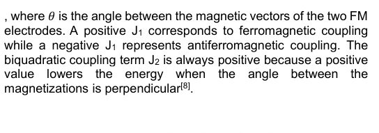
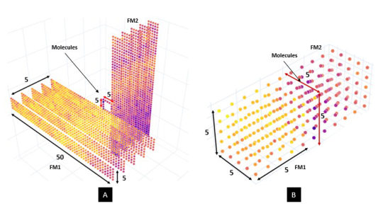
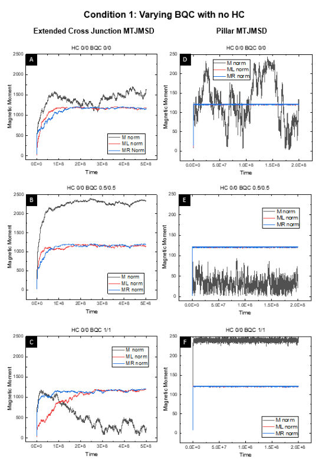
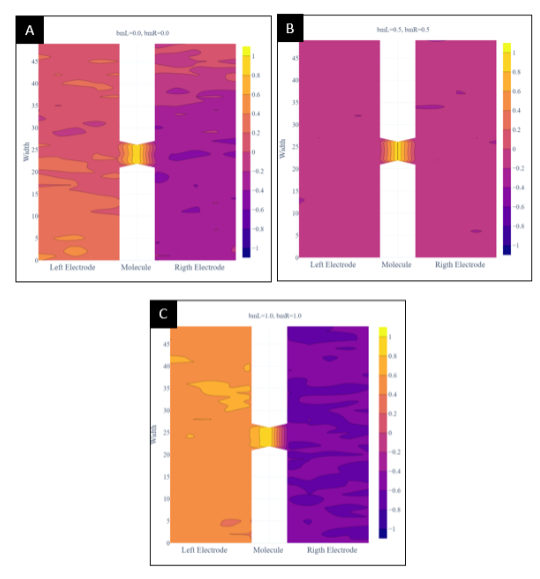
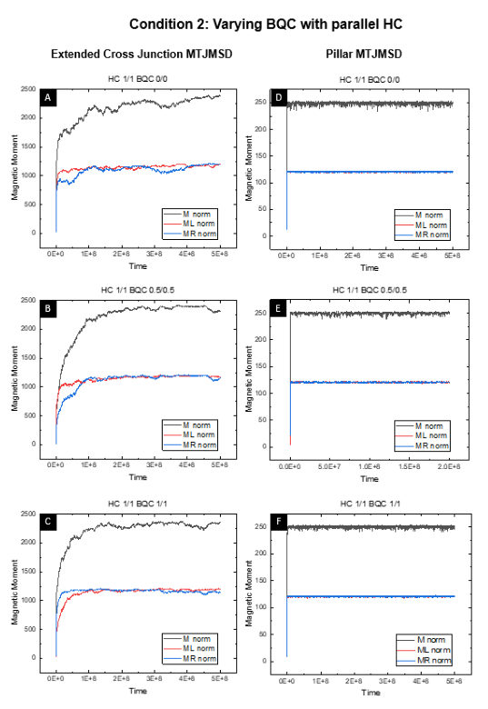
Summary. This paper explores how Heisenberg and biquadratic exchange couplings compete to determine the magnetic state of molecular spintronic devices. It finds that while Heisenberg coupling dictates the primary magnetic alignment, biquadratic coupling helps stabilize the system against thermal fluctuations. These findings help explain experimental observations of non-standard magnetic phase orientations.
Why it may be interesting. not directly relevant
Main problem. Investigating the competing effects of Heisenberg exchange coupling (HC) and biquadratic exchange coupling (BQC) on the magnetic stability and spin orientation in magnetic tunnel junction molecular spintronics devices (MTJMSD).
Main result. Heisenberg coupling is the dominant force determining parallel or antiparallel magnetization, while BQC plays a secondary role by assisting in magnetic stabilization and reducing susceptibility to thermal fluctuations.
Method. Monte Carlo simulations using the Metropolis algorithm and a 3D Heisenberg/Ising model to study temporal evolution and equilibrium states.
Model / system. A Magnetic Tunnel Junction Molecular Spintronics Device (MTJMSD) consisting of a ferromagnet-insulator-ferromagnet (FM-I-FM) trilayer with paramagnetic molecules at the exposed edges, modeled with an expanded Hamiltonian including HC and BQC terms.
Key observables. Device magnetization, spin orientation angles, temporal evolution of magnetization, and 2-D autocorrelation of molecular and electrode spins.
Important parameters / regimes. Heisenberg coupling strength (J), biquadratic coupling strength (b), thermal energy (kT), and device geometry (pillar vs. extended cross junction).
Assumptions / limitations. The study assumes the BQC is a localized phenomenon at the junction and uses a simplified 3D model for the electrodes.
Figures summary. Schematics of the MTJMSD and molecular interactions; autocorrelation graphs; temporal evolution of magnetization; and contour plots of spin angles as a function of coupling and temperature.
Paper structure. The paper introduces the MTJMSD problem, describes the Hamiltonian and Monte Carlo methodology, presents results for varying BQC under different HC regimes, analyzes thermal effects, and concludes with implications for device stability.
Heisenberg exchange coupling (HC) and biquadratic exchange coupling (BQC) are known to occur in magnetic tunnel junctions (MTJ) and nanoscale spintronics structures. MTJ-based molecular spintronics devices (MTJMSD) provide a platform to study these interactions and the correlated magnetic behavior they generate. Molecular spin channels formed along the exposed MTJ edge have been shown to produce strong exchange interactions that include HC and BQC, which can drive perpendicular alignment of spin vectors in adjacent ferromagnetic electrodes. Despite their importance, the competing roles of HC and BQC in MTJMSDs remain unclear. Monte Carlo simulations using a three-dimensional Heisenberg model were performed to systematically vary BQC strength under three conditions: no molecular HC, strong parallel HC, and strong antiparallel HC. The resulting magnetic and physical properties of the MTJMSDs were analyzed. Increasing BQC strength produced minimal changes in overall magnetization when strong HC was present, indicating that HC dominates device magnetization. Temporal evolution studies showed that devices with only BQC failed to reach magnetic stability, while devices with both HC and BQC achieved stable magnetic states due to the stabilizing influence of HC. These results show that BQC plays a secondary role in magnetization dynamics and cannot overcome the stronger stabilizing effect of HC. The presence of BQC offers a plausible explanation for experimentally observed magnetic phase orientations beyond simple parallel and antiparallel states in MTJMSDs.
Authors: Tomohiro Hattori, Takuya Hatomura
Type: theory · Category: quantum information and computing · PDF: https://arxiv.org/pdf/2605.13082v1
Analysis basis: full PDF text, analyzed in chunks
Topic relevance: non-equilibrium dynamics 2/5 · quantum measurements 2/5
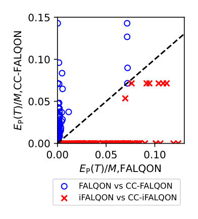
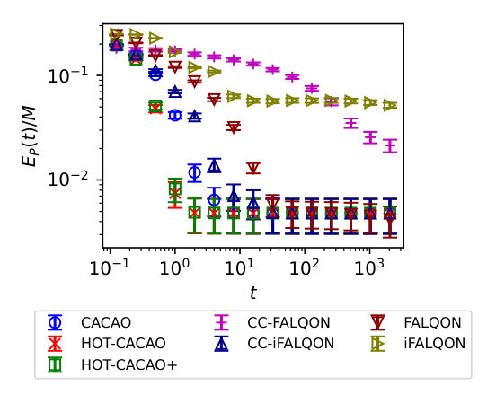
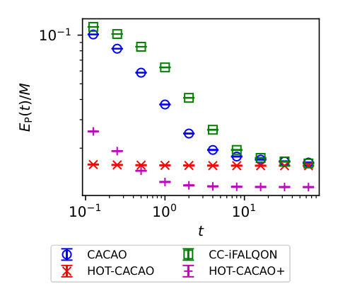
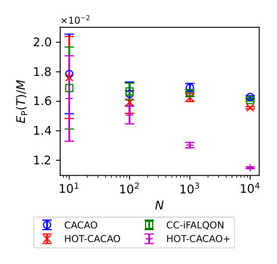
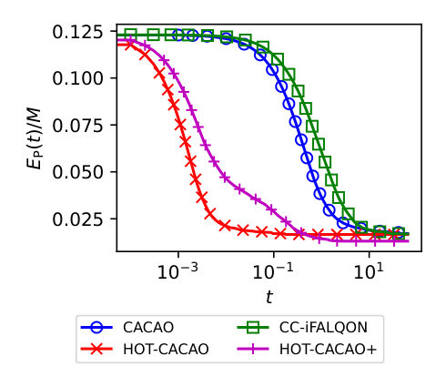
Summary. This paper establishes a classical counterpart to feedback-based quantum optimization algorithms and compares their performance. It reveals that while quantum algorithms can find better solutions through nonlocal dynamics, classical algorithms are faster and more scalable for large-scale optimization problems.
Why it may be interesting. It provides deep insights into the trade-off between the global exploration capabilities of quantum dynamics and the efficient local optimization of classical dynamics, which is central to understanding the limits of quantum advantage in optimization.
Main problem. The paper investigates the possibility of quantum advantage in combinatorial optimization by comparing feedback-based quantum algorithms (FALQON, iFALQON) with their newly introduced classical counterparts (CACAO, HOT-CACAO).
Main result. Quantum algorithms can achieve higher solution quality due to global/nonlocal dynamics, while classical algorithms exhibit significantly faster convergence and better scalability for large-scale HUBO problems.
Method. The authors use the quantum-classical correspondence of spin systems and Lyapunov control theory to derive classical counterparts and higher-order counterdiabatic terms, performing benchmarks using QuTiP and Runge-Kutta simulations.
Model / system. The study utilizes spin systems described by the Schrödinger equation (quantum) and canonical equations of motion (classical), applied to combinatorial optimization problems like 2-SAT and 3-SAT (QUBO and HUBO).
Key observables. Energy density (EP(t)/M), convergence rate, control strengths (beta_X, beta_Y, beta), and solution quality.
Important parameters / regimes. System size (N), operation time (t), clause density (alpha), and driving inhomogeneity.
Assumptions / limitations. The analysis assumes the validity of the quantum-classical correspondence for spin systems and uses specific initial states like uniform superposition or random spherical sampling.
Figures summary. Figures compare energy density and convergence rates across algorithms for small-scale 2-SAT and large-scale 3-SAT, demonstrating the scalability of HOT-CACAO+ and the stability/instability of different driving schemes.
Paper structure. The paper introduces the classical counterparts of quantum feedback algorithms, develops a higher-order theory for classical optimization, performs comparative benchmarks on small and large scales, and analyzes the underlying mechanism of performance differences.
Feedback-based quantum optimization is a quantum approach to combinatorial optimization. In this paper, we introduce the classical counterpart of feedback-based quantum optimization by using the quantum-classical correspondence of spin systems to discuss the possibility of quantum advantage. It also enables us to develop higher-order theory of a previously proposed classical approach to feedback-based quantum optimization. First, we compare the feedback-based algorithm for quantum optimization (FALQON) and its variant with their classical counterparts. Then, we perform benchmark tests of various quantum and classical algorithms with small-scale instances, and of classical algorithms with large-scale instances. Main findings are that (i) quantum algorithms can be advantageous to classical algorithms in terms of the quality of solutions, while classical algorithms tend to show faster convergence than quantum ones, and (ii) one of the classical algorithms discussed in this paper shows significant scalability for higher-order unconstrained binary optimization problems. These findings highlight the importance of quantumness and the usefulness of classical approaches.
Authors: Vishnulal Cheriyodathillathu, Tanmay Patil, Saurya Das, Soumen Basak
Type: theory · Category: other · PDF: https://arxiv.org/pdf/2605.13508v1
Analysis basis: full PDF text, analyzed in chunks
Topic relevance: Keldysh / 2PI / non-Gaussian methods 2/5 · quantum measurements 2/5
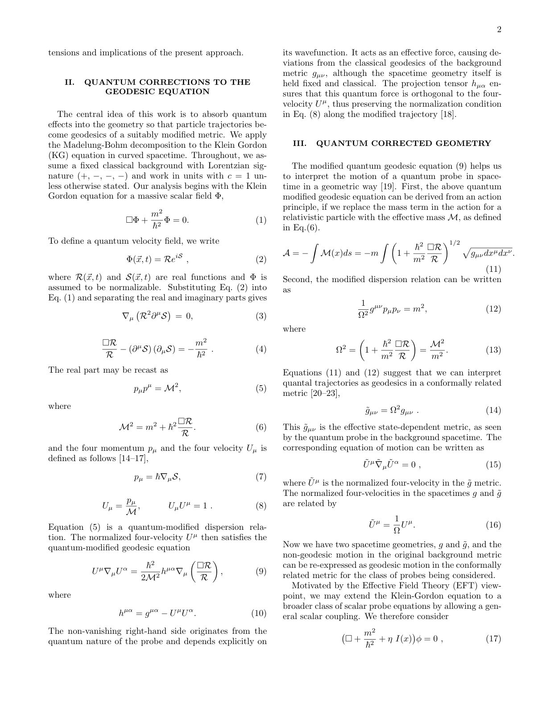
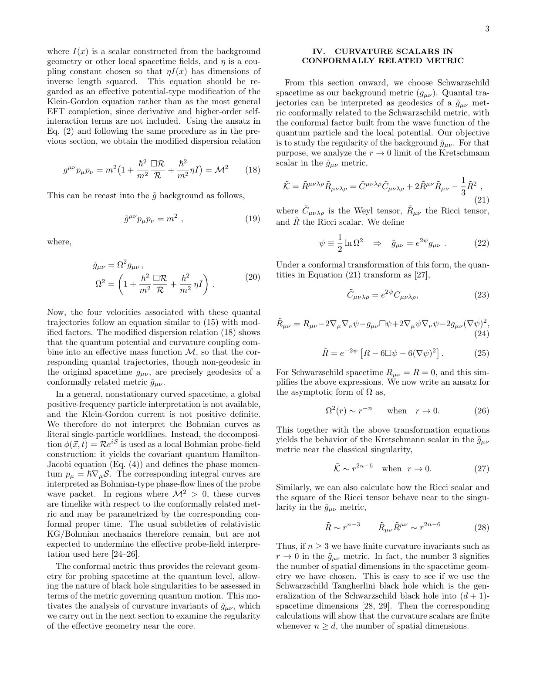
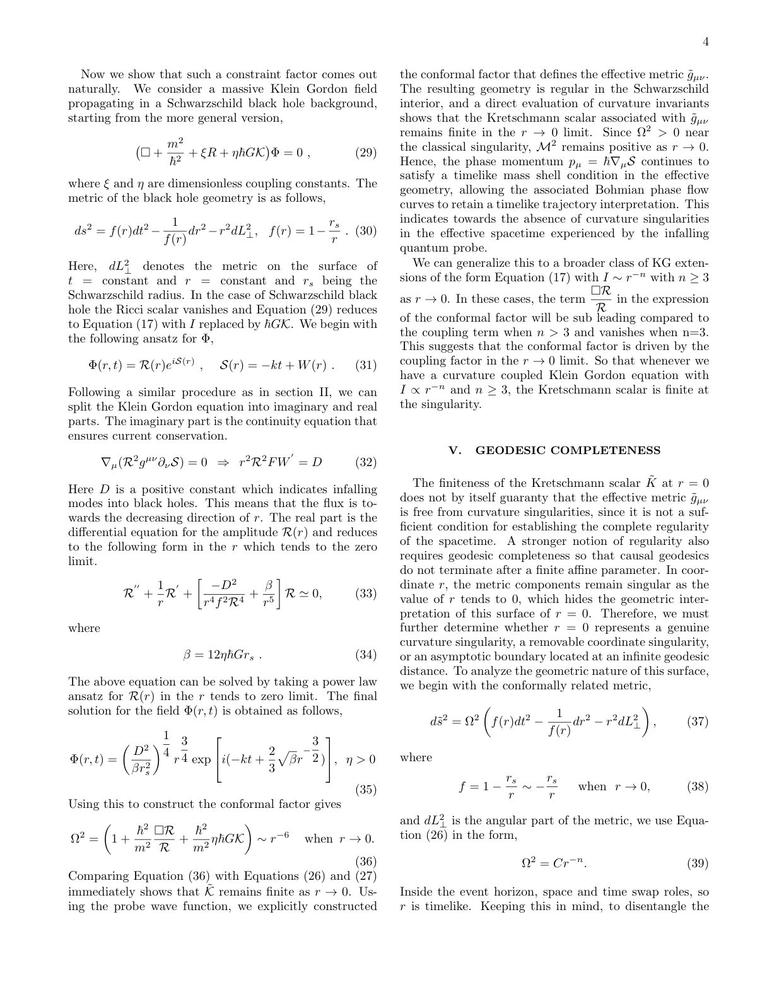
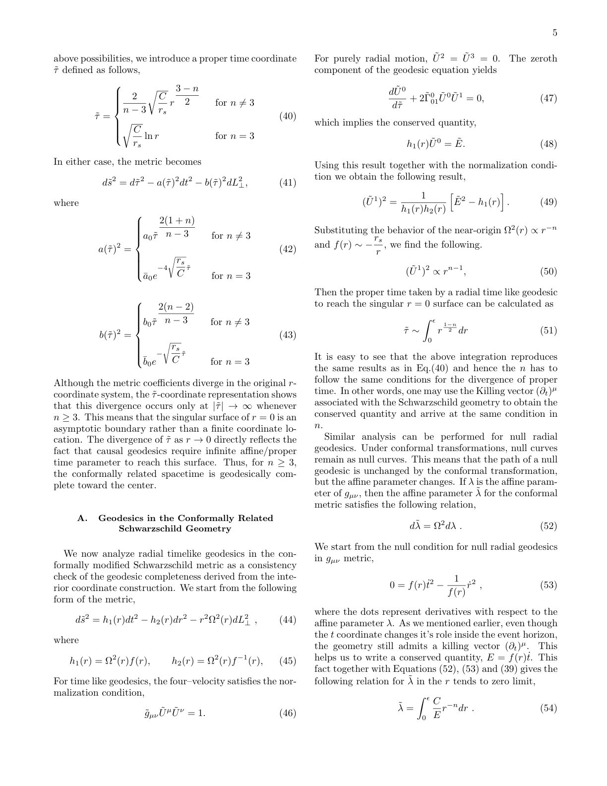
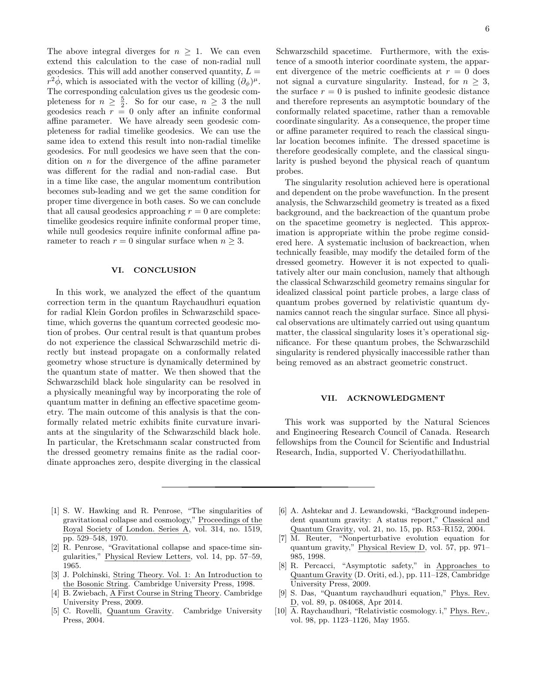
Summary. This paper proposes that the Schwarzschild singularity can be regularized without a full theory of quantum gravity by considering the effective geometry seen by quantum probes. By using Bohmian mechanics, the authors demonstrate that the singularity is replaced by an asymptotic boundary with finite curvature. This suggests that quantum dynamics on a classical background can fundamentally alter the causal structure of black holes.
Why it may be interesting. not directly relevant
Main problem. The paper investigates whether the Schwarzschild singularity at r=0 can be resolved using a semiclassical approach where quantum effects are modeled via Bohmian trajectories.
Main result. The authors show that the effective geometry experienced by a quantum probe has finite curvature invariants and is geodesically complete, effectively rendering the classical singularity physically inaccessible.
Method. The study uses the Madelung-Bohm decomposition of the Klein-Gordon wavefunction to map non-geodesic trajectories onto geodesic motion in a conformally related effective metric.
Model / system. A massive scalar field (Klein-Gordon field) propagating in a fixed, classical Schwarzschild spacetime background.
Key observables. Kretschmann scalar (curvature invariant), conformal proper time, and affine parameter.
Important parameters / regimes. The limit r approaching 0, the conformal factor scaling exponent n, and the coupling constants xi and eta.
Assumptions / limitations. The background Schwarzschild geometry is assumed to be fixed and classical, neglecting the back-reaction of the quantum probe on the spacetime.
Paper structure. The paper begins by defining the semiclassical framework and Bohmian trajectories, moves to the derivation of the effective conformal metric, performs an asymptotic analysis of curvature invariants near the origin, and concludes with an evaluation of geodesic completeness.
We revisit the Schwarzschild singularity in a semiclassical setting where the background geometry is classical and quantum effects enter through Bohmian (quantal) trajectories associated with a Klein Gordon wave packet. Using the Madelung-Bohm decomposition of the Klein Gordon wavefunction, we show that the quantum-modified motion is equivalent to geodesic motion in an effective metric conformally related to Schwarzschild, with a conformal factor fixed by the wavefunction amplitude. Solving the wavefunction equation near $r\to 0$ determines this factor and yields finite curvature invariants, in suitable coordinates the interior extends smoothly and the effective spacetime is geodesically complete. This suggests that quantum dynamics on a fixed classical background can regularize the Schwarzschild singularity without a full theory of quantum gravity.
Authors: Ugur Tamer, Özgür E. Müstecaplıoğlu
Type: theory · Category: quantum information and computing · PDF: https://arxiv.org/pdf/2605.12828v1
Analysis basis: full PDF text, analyzed in chunks
Topic relevance: entanglement & information structure 2/5 · quantum measurements 2/5
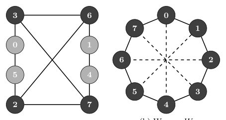
Summary. The researchers discovered a new 8-vertex graph, named Quad-C5, that provides the largest known quantum contextuality gap for this size. This graph is more efficient than previous benchmarks and shows enhanced robustness to depolarizing noise in higher dimensions. The discovery reveals a deep algebraic connection between this new graph and the well-known KCBS pentagon via the golden ratio.
Why it may be interesting. This is interesting for quantum information theorists as it identifies a more efficient and robust resource for certifying quantum contextuality, which is a fundamental requirement for certain quantum computing protocols and device-independent tasks.
Main problem. The paper aims to identify the graph on eight vertices that maximizes the quantum contextuality gap within the Cabello-Severini-Winter framework.
Main result. The discovery of the Quad-C5 graph, which achieves a maximum contextuality gap of 0.46784, surpassing the previously known Wagner graph while using fewer edges and providing superior noise robustness at d=4.
Method. An exhaustive semidefinite programming (SDP) search over all 11,117 connected non-isomorphic graphs on eight vertices, supplemented by high-precision numerical refinement and the PSLQ integer-relation algorithm.
Model / system. The study uses the Cabello-Severini-Winter (CSW) framework for projective measurements, modeling contextuality via exclusion graphs where edges represent orthogonal projectors in qutrit (d=3) and four-dimensional (d=4) Hilbert spaces.
Key observables. The contextuality gap (Delta), the Lovasz theta function (quantum bound), the independence number (classical bound), and the critical visibility (v*) under depolarizing noise.
Important parameters / regimes. Number of vertices (n=8), dimension (d=3, 4), edge count (m), and the visibility parameter (v) for the depolarizing channel.
Assumptions / limitations. The analysis assumes the validity of the CSW framework for projective measurements and uses a standard depolarizing noise model.
Figures summary. Figure 1 provides a structural comparison between the newly discovered Quad-C5 graph and the Wagner graph.
Paper structure. The paper begins with an exhaustive search and identification of the optimal graph, followed by an algebraic characterization of its properties, a comparison of its efficiency and noise robustness against known witnesses, and a spectral analysis linking it to the KCBS pentagon.
We perform an exhaustive semidefinite-programming search over all 11{,}117 connected non-isomorphic simple graphs on eight vertices to maximize the quantum contextuality gap $Δ(G)=\vartheta(G)-α(G)$, where $\vartheta(G)$ is the Lovász theta function and $α(G)$ is the independence number of the exclusion graph $G$ within the Cabello--Severini--Winter framework for projective measurements. A previously uncharacterized graph on $n=8$ vertices and $m=10$ edges, which we name the Quad-$C_5$ graph (graph6 code: \texttt{GCQb`o}), achieves $Δ=0.46784$, surpassing the Wagner graph $W$ ($Δ\approx0.414$, $m=12$) with two fewer edges. We determine numerically, via the PSLQ integer-relation algorithm at 50-digit precision, that Quad-$C_5$ is a \emph{qutrit} contextuality witness with $η_3=1+\sqrt{5}$ (minimal polynomial $x^2-2x-4=0$), while numerical evidence indicates the Wagner graph requires a four-dimensional (two-qubit) Hilbert space. The graph contains four mutually overlapping induced five-cycles, and its adjacency spectrum is dominated by golden-ratio eigenvalues, tracing the contextuality advantage algebraically to the KCBS pentagon. Under depolarizing noise, Quad-$C_5$ at $d=3$ shares the critical visibility $v^*=1/(3\sqrt{5}-5)\approx0.585$ of the KCBS witness -- an analytically provable coincidence arising from a uniform shift of the graph parameters -- while at $d=4$ it strictly surpasses the Wagner graph in noise robustness.
Authors: Richard D Gill, Inge S. Helland, Bart Jongejan
Type: theory · Category: quantum information and computing · PDF: https://arxiv.org/pdf/2605.13154v1
Analysis basis: full PDF text, analyzed in chunks
Topic relevance: entanglement & information structure 2/5 · quantum measurements 2/5
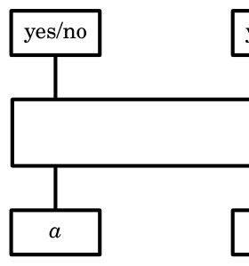
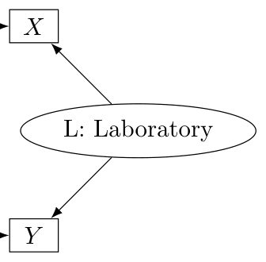
Summary. This paper explores different philosophical and physical ways to interpret the violation of Bell inequalities. Rather than proposing a single new theory, the authors present three different ways to 'find comfort' by abandoning either locality or realism while maintaining scientific integrity.
Why it may be interesting. It provides a deep foundational analysis of the implications of non-locality and the validity of the 'realism' assumption, which is central to understanding the limits of quantum information processing and the nature of quantum correlations.
Main problem. The paper addresses the fundamental dilemma posed by Bell's theorem: how to reconstruct a coherent worldview following the experimental violation of the CHSH inequality without resorting to unscientific theories like superdeterminism or retrocausality.
Main result. The authors present three distinct theoretical frameworks for interpreting Bell violations: one accepting irreducible randomness, one based on the limitations of accessible variables, and one using a geometric hidden-variable construction.
Method. The authors use a dialectic approach, employing Pearl-style causal graphs (DAGs) to establish a shared mathematical foundation before presenting three divergent individual interpretations.
Model / system. The paper analyzes a Bell-type experiment involving three parties (Alice, Bob, and Carol) and uses models such as the 'Loop of Four' (a 1D geometric construction) and Belavkin-style eventum mechanics.
Key observables. The CHSH parameter (S), expectation values of correlated outcomes, and joint detection probabilities.
Important parameters / regimes. The Tsirelson bound, detector efficiency, and the dimensionality of space.
Assumptions / limitations. The authors explicitly reject superdeterminism (violation of statistical independence) and retrocausality, while exploring the abandonment of either locality or realism (counterfactual definiteness).
Figures summary. Figure 1 shows the spatio-temporal setup of a Bell trial; Figure 2 presents a Directed Acyclic Graph (DAG) of the causal model; Figure 8 illustrates a 1D 4-loop model for hidden variables.
Paper structure. The paper begins with a shared mathematical exposition of Bell's theorem using causal graphs, followed by a summary of loophole-free experiments, and concludes with three individual sections where each author presents their specific physical interpretation.
Bell's theorem states that no description of a Bell experiment can be simultaneously local, realistic in the sense of counterfactual definiteness, and free of conspiracy between settings and hidden state. The recent generation of experiments has confirmed the predicted violation of the CHSH inequality, so one of the assumptions must be abandoned. Which one, and how one reconstructs a coherent worldview after doing so, is a question on which many authors disagree. This paper is written by three such authors. All three reject both counterfactual definiteness and conspiratorial violation of statistical independence of setting choices and state. After a joint exposition of the classical half of Bell's theorem in the language of Pearl-style causal graphs, a joint summary of the loophole-free experiments, and a joint survey of the recent literature, each author states where they have presently arrived. Gill accepts irreducible and non-local quantum randomness and finds the choice between locality and realism a false dichotomy. In his later works, Bell derives counterfactual definiteness from classical local causality, and that is what has to go. The metaphysical concepts "realism", "locality", "causality" need to be reconsidered. Helland reconstructs the Hilbert-space formalism from a theory of accessible variables, and from this theory he concludes that every observer must be limited in a specific sense. Jongejan proposes a geometric hidden-variable construction in which the degree of violation of the CHSH inequality depends on the number of dimensions of space, Tsirelson's bound corresponding to three dimensions. The authors conclude with a discussion.
Authors: Alexandru Gheorghiu, Dale Jacobs, Saeed Mehraban, Arsalan Motamedi
Type: theory · Category: quantum information and computing · PDF: https://arxiv.org/pdf/2605.12615v1
Analysis basis: full PDF text, analyzed in chunks
Topic relevance: entanglement & information structure 2/5 · quantum measurements 1/5
Summary. This paper provides a comprehensive complexity classification for determining if two quantum states are equivalent under group actions. It reveals that while some cases like the Pauli group are efficiently solvable, others are as hard as the Graph Isomorphism problem or even QSZK-complete, ruling out efficient quantum algorithms for certain mixed-state problems.
Why it may be interesting. This work is highly relevant to quantum optics and quantum information as it establishes the fundamental computational limits of identifying symmetries and equivalence classes in both discrete-variable and continuous-variable quantum systems.
Main problem. The paper investigates the computational complexity of Quantum State Isomorphism Problems (QSIP) under the action of various groups, determining if two quantum states are related by a group element.
Main result. The authors prove that pure-state QSIP is BQP-hard for all nontrivial groups, BQP-complete for the Pauli group, and GI-hard for the Clifford group, while mixed-state QSIP is QSZK-complete.
Method. The study employs complexity theory reductions (from Graph Isomorphism, Hidden Subgroup Problem, and Quantum State Distinguishability), classical shadows, and stabilizer-rank analysis.
Model / system. The models include n-qubit systems (pure and mixed states), the Pauli and Clifford groups, and infinite-dimensional bosonic systems using the stellar representation and linear optical unitaries.
Key observables. Fidelity, trace distance, and inner products between quantum states.
Important parameters / regimes. Precision parameters (alpha, beta) for state closeness, photon number (r) for bosonic states, and the trace condition (mu) for group representations.
Assumptions / limitations. Assumes efficient representability of groups, finite-dimensional or succinctly represented bosonic states, and an unbounded prover in the complexity protocols.
Paper structure. The paper introduces the QSIP framework, analyzes pure-state complexity for various group families (Pauli, Clifford, Abelian), extends the analysis to mixed states, investigates bosonic/linear optical systems, and concludes with implications for the State Hidden Subgroup Problem.
We study the computational complexity of quantum state isomorphism problems under group actions: given two quantum circuits that prepare pure or mixed states, decide whether the two states are related by a group action. This can be seen as a quantum state version of the Hidden Shift Problem, in much the same way that the State Hidden Subgroup Problem is a quantum version of the ordinary Hidden Subgroup Problem. We prove several results for this computational problem: - For the pure-state version, we show that the problem is BQP-hard for all nontrivial groups, and contained in QCMA $\cap$ QCSZK. We further obtain refined results for specific groups of interest: for abelian groups we show that the problem reduces to the state hidden subgroup problem over the generalized dihedral group; for the Clifford group, the problem is at least as hard as Graph Isomorphism under polynomial-time reductions; for the Pauli group it is BQP-complete. - For the mixed-state version, for nontrivial, finite and efficiently representable groups, the problem is QSZK-complete. - We also study a variant of this problem over an infinite group, in particular, the bosonic linear optical unitaries. We show that in the setting where the classical description of the quantum state is given in a suitable wave function representation known as the stellar representation, the problem is at least as hard as Graph Isomorphism, and is contained in NP $\cap$ SZK. Prior to our work, state isomorphism problems had only been studied for the symmetric group [LG17]. As a consequence of our results, we resolve an open question posed in [HEC25] about the existence of a quantum algorithm for the abelian state hidden subgroup problem on mixed states. We show that this problem is QSZK-hard in the worst case, thereby ruling out an efficient quantum algorithm unless QSZK = BQP.
Authors: Dimitrios Giannakis, Gage Hoefer
Type: theory · Category: other · PDF: https://arxiv.org/pdf/2605.13774v1
Analysis basis: full PDF text, analyzed in chunks
Topic relevance: quantum measurements 2/5
Summary. This paper proposes a new mathematical framework for controlling infinite-dimensional systems by using the theory of affiliated operators in von Neumann algebras. It successfully handles the mathematical difficulties of unbounded Hamiltonians, allowing for a well-defined Lie algebraic approach to controllability in both quantum and classical contexts.
Why it may be interesting. It provides a rigorous mathematical foundation for controlling infinite-dimensional systems, which is crucial for advanced quantum control tasks in cavity QED and continuous-variable quantum information where unbounded Hamiltonians are standard.
Main problem. Addressing the mathematical challenges of controllability and time-optimal control for bilinear systems in infinite-dimensional Hilbert spaces where Hamiltonians are unbounded.
Main result. The authors establish a framework using affiliated operators in finite von Neumann algebras to recover a well-defined dynamical Lie algebra and prove the existence of time-optimal controls.
Method. Utilizing von Neumann algebra theory, specifically the properties of $\tau$-measurable and affiliated operators, alongside the Koopman operator formalism for classical systems.
Model / system. The framework applies to infinite-dimensional quantum systems governed by the Schrödinger equation and classical dynamical systems modeled via the Koopman operator formalism.
Key observables. Reachable sets of vector states and the dynamical Lie algebra structure.
Important parameters / regimes. The norm bounds of control terms, the type of von Neumann algebra (finite vs. semifinite), and the spectral properties of the drift operator.
Assumptions / limitations. The drift and control terms are assumed to be affiliated with a von Neumann algebra of finite type; the framework specifically addresses the difficulties of unbounded operators.
Paper structure. The paper introduces the operator-algebraic framework for affiliated operators, develops control theory for quantum systems (existence of optimal controls and reachable sets), extends the approach to classical systems via Koopman theory, and provides specific examples like the Jaynes-Cummings model and differential operators on Lie groups.
Using techniques from the theory of von Neumann algebras, we propose a framework for addressing questions of controllability of bilinear systems on infinite dimensional Hilbert spaces. In the setup, we assume only that the drift and control terms arising in a bilinear control system are affiliated with a von Neumann algebra of finite type acting on the same Hilbert space. When the control terms satisfy basic norm bound conditions, we prove existence of time-optimal controls. In the more general setting where all operators may be unbounded, we show how the dynamical Lie algebra for the system is still well-defined and may be used to check approximate controllability of the system in question. We discuss how this approach can be applied to classical dynamical systems through the Koopman operator formalism, and investigate potential candidates for the von Neumann algebra which may guide the choice of controls. We illustrate how an affiliation relation naturally arises in both classical and quantum control systems with a few examples.
Authors: D. -M. Mei, K. -M. Dong, S. A. Panamaldeniya, A. Prem, S. Chhetri, N. Budhathoki, S. Bhattarai
Type: both · Category: quantum information and computing · PDF: https://arxiv.org/pdf/2605.13680v1
Analysis basis: full PDF text, analyzed in chunks
Topic relevance: QC/QI experiment 2/5
Summary. This paper provides a comprehensive comparison of four different ways to implement spin qubits using germanium. It concludes that while gate-defined hole qubits are currently the best candidate for scalable quantum computing, the different Ge-based technologies can work together in a specialized ecosystem for memory and hybrid processing.
Why it may be interesting. It provides a high-level strategic analysis of semiconductor-based quantum architectures, which is relevant for understanding the physical limits of scalable hardware and the engineering of spin-photon/spin-phonon interfaces.
Main problem. The lack of a unified comparative framework to evaluate the trade-offs between different germanium-based spin-qubit modalities (donor, acceptor, gate-defined hole, and gate-defined electron) regarding coherence, controllability, and scalability.
Main result. The study identifies gate-defined hole-spin qubits as the most mature and promising path for scalable processors, while proposing a layered ecosystem where donors and acceptors serve specialized roles in memory and hybrid architectures.
Method. A comparative technical assessment using a literature-based review, scaling arguments, and a new theoretical framework for estimating phononic-crystal-modified T1 relaxation.
Model / system. High-purity germanium (Ge) platforms including donor-bound electrons, acceptor-bound holes, and gate-defined electron and hole quantum dots in Ge/SiGe heterostructures.
Key observables. Spin-lattice relaxation rate (T1), coherence time (T2), g-tensor anisotropy, valley splitting, and gate fidelity.
Important parameters / regimes. Spin-orbit coupling strength, effective masses (longitudinal/transverse), isotopic purity (5N to 13N), and impurity-induced strain scales.
Assumptions / limitations. The comparison assumes that the developmental trajectory of each modality can be extrapolated from current experimental milestones and materials physics.
Figures summary. Figure 1 visualizes the relationship between average linear strain and residual impurity density in germanium.
Paper structure. The paper begins with a review of Ge materials physics, differentiates the four qubit modalities based on band structure (L-point vs. Gamma-point), introduces a framework for relaxation estimation, and concludes with a strategic roadmap for a layered quantum ecosystem.
High-purity germanium (Ge) has re-emerged as a versatile semiconductor platform for spin-based quantum information processing because it combines mature materials processing, access to spin-free isotopes, high mobilities, small effective masses, and strong but engineerable spin--orbit coupling. However, ``Ge qubits'' are not a single technology. Donor spin qubits, acceptor spin qubits, gate-defined hole spin qubits, and gate-defined electron spin qubits exploit different parts of the Ge band structure and therefore make distinct trade-offs among coherence, controllability, fabrication complexity, and scalability. Here we compare these four Ge-based spin-qubit modalities on a common physical and architectural footing. We review the shared Ge materials physics, including isotopic purification, the multivalley \(L\)-point conduction band, the spin-\(3/2\) valence band, heavy-hole/light-hole mixing, strain, interfaces, disorder, and phonons. We also introduce a common framework for estimating phononic-crystal-modified \(T_1\) using a calibrated reference relaxation rate, a geometry-dependent strain-density-of-states suppression factor, and parasitic relaxation channels. The comparison shows that gate-defined Ge hole-spin qubits currently offer the strongest combination of all-electrical control, demonstrated multiqubit operation, and scalability. Donor, acceptor, and gate-defined electron qubits remain important complementary directions for memory, hybrid, and exploratory architectures. Overall, Ge supports a diverse qubit ecosystem, with gate-defined hole-spin qubits presently providing the clearest path toward scalable Ge-based quantum processors.
Authors: Ina Park, Dongwook Kim, Jisook Hong, Beomjoon Goh, Bo Gyu Jang
Type: theory · Category: strongly correlated electrons · PDF: https://arxiv.org/pdf/2605.13559v1
Analysis basis: full PDF text, analyzed in chunks
Topic relevance: Kondo & dissipative impurity 2/5
Summary. This paper uses DFT+DMFT to show that dynamical electron correlations are essential for understanding the magnetic properties of RuO2. It demonstrates that the material's magnetic ground state is highly tunable, with minimal strain being enough to induce altermagnetism. This provides a theoretical resolution to conflicting experimental observations of the material's magnetism.
Why it may be interesting. not directly relevant
Main problem. Resolving the conflicting experimental reports regarding whether the magnetic ground state of RuO2 is paramagnetic or altermagnetic and understanding the role of dynamical electron correlations in its tunability.
Main result. The study reveals that RuO2 is highly susceptible to external perturbations, where even a 0.5% compressive strain can drive the system into an altermagnetic phase due to dynamical correlation effects.
Method. The researchers used Density Functional Theory combined with Dynamical Mean-Field Theory (DFT+DMFT) with a continuous-time quantum Monte Carlo (CTQMC) impurity solver.
Model / system. The physical system is RuO2, a 4d transition-metal oxide with a rutile structure, characterized as a Hund's metal near the paramagnetic-altermagnetic and itinerant-localized phase boundaries.
Key observables. Spectral functions, optical conductivity, effective mass, quasiparticle weight (Z), ordered magnetic moment (M), and local spin susceptibility.
Important parameters / regimes. Coulomb interaction U = 3.5 eV, Hund's coupling J = 0.6 eV, and compressive strain along the c-axis.
Assumptions / limitations. The study assumes a density-density form of the Coulomb interaction using Slater parametrization and focuses on the local approximation inherent in DMFT.
Figures summary. Figure 1 shows the crystal structure, ARPES intensity, and spectral functions; Figure 4 compares DFT and DFT+DMFT spectral functions and optical conductivity; Figure 5 discusses orbital-specific effects.
Paper structure. The paper introduces the experimental conflict in RuO2, presents the DFT+DMFT methodology, compares results with experimental ARPES and optical data, investigates the effect of strain on magnetic stability, and concludes with the role of correlations in phase tunability.
RuO$_2$ has been regarded as a prototypical candidate for metallic altermagnet, offering a potential platform for high-speed and high-efficiency spintronics. However, the magnetic ground state of RuO$_2$ remains a topic of active debate due to conflicting experimental reports. In this work, we investigate the effect of electron correlations in RuO$_2$ using density functional theory combined with dynamical mean-field theory (DFT+DMFT). In contrast to previous DFT-based studies, DFT+DMFT captures essential dynamical correlation effects, yielding spectral functions and optical conductivities in excellent quantitative agreement with experiments, and further reveals that RuO$_2$ resides in the close vicinity of both the paramagnetic-altermagnetic phase boundary and the itinerant-localized crossover, rendering the magnetic ground state highly susceptible to external perturbations. Indeed, even a minimal compressive strain of $\sim$0.5% is sufficient to drive the system into an altermagnetic phase. These findings elucidate the origin of the conflicting experimental observations and reveal that dynamical correlation effects are the key driving force behind the highly tunable magnetic ground state of RuO$_2$.
Authors: Gregor Aigner, Berend Klaver, Martin Lanthaler, Wolfgang Lechner
Type: theory · Category: quantum information and computing · PDF: https://arxiv.org/pdf/2605.12600v1
Analysis basis: full PDF text, analyzed in chunks
Topic relevance: analog quantum simulation 2/5
Summary. This paper presents a new framework for simulating higher-dimensional fermion lattices on qubit arrays by dynamically switching between different 1D Jordan-Wigner encodings. It achieves near-optimal scaling for interaction counts and significantly reduces circuit depth for various hardware architectures. This allows for the efficient simulation of complex models like the Fermi-Hubbard model on square, Lieb, and Kagome lattices.
Why it may be interesting. This is highly relevant for many-body dynamics as it provides a scalable way to map complex, higher-dimensional fermionic Hamiltonians onto near-term and fault-tolerant quantum hardware without the prohibitive qubit overhead of previous methods.
Main problem. Simulating 2D and higher-dimensional fermionic lattices on qubit hardware is inefficient due to the 1D connectivity constraints of standard Jordan-Wigner mappings, which introduce significant non-local interaction overhead.
Main result. The authors develop a method to simulate all geometrically local interactions on an N-site 2D fermion lattice with O(1) interaction overhead and no space overhead, reducing circuit depth to O(sqrt(N)) on standard lattices and O(1) on surface-code architectures.
Method. The method uses 'dynamic fermionic encoding' by switching between complementary 'boustrophedon' (snake-like) Jordan-Wigner encodings to align the encoding path with different lattice dimensions.
Model / system. The framework targets 2D and d-dimensional fermionic lattices, specifically implementing Fermi-Hubbard models (including NN and NNN hopping) on various geometries like square, Lieb, and Kagome lattices, as well as the Fermionic Fast Fourier Transform (FFFT).
Important parameters / regimes. Scaling of gate counts (CNOTs) and circuit depth relative to the number of sites N; interaction range delta; dimensionality d.
Assumptions / limitations. The method assumes geometrically local interactions; the efficiency of the encoding switch depends on the underlying hardware connectivity (e.g., superconducting vs. neutral atom).
Figures summary. Figure 1 introduces F2Q mapping and encoding switching; Figure 2 shows the mechanism for 2D JW reordering; Figures 3-4 illustrate 2D/3D boustrophedon patterns and fermion routing; Figure 5 and Figure 10 compare resource scaling (gate count and depth) against standard FSWAP networks; Figures 16-18 show implementations for Lieb and Kagome lattices.
Paper structure. The paper begins with the motivation of F2Q mapping overhead, introduces the dynamic encoding framework and boustrophedon patterns, extends the construction to higher dimensions and complex routing, and concludes with specific applications to Hubbard models and lattice embeddings.
Local interactions among electrons underlie many complex properties of correlated materials. While the Jordan-Wigner transformation can preserve this locality along one spatial dimension, interactions along the remaining dimensions typically incur substantial overhead. We show how to simulate all geometrically local interactions on an $N$-site two-dimensional fermion lattice with no asymptotic overhead in the number of interactions and no space overhead. The primary overhead of our method is circuit depth, which on a qubit lattice matches that of fermionic swap networks, scaling as $\mathcal{O}(\sqrt{N})$, but reduces to $\mathcal{O}(\log N)$ on reconfigurable qubit arrays and to $\mathcal{O}(1)$ in lattice-surgery-based surface-code architectures. This is enabled by dynamically reorienting the Jordan-Wigner transformation to switch the lattice dimension along which locality is preserved. Furthermore, we study fermion routing, as required for the simulation of non-local interactions. When using qubit lattices, we reach resource scaling that asymptotically matches that of qubit routing, whilst on fully connected qubit devices, a depth scaling arbitrarily close to $\mathcal{O}(\log N)$ is reached. This allows the fermionic fast Fourier transform to be implemented on qubit lattices with asymptotically optimal resource scaling under these locality constraints. Notably, all of our constructions naturally extend to $d$-dimensional lattices. Beyond scaling improvements, we show explicit examples of our method, including Fermi-Hubbard-model simulations of the square-, Lieb- and kagome lattice and the fermionic fast Fourier transform.
Authors: José Dupont, Jasper van Wezel
Type: theory · Category: statistical mechanics · PDF: https://arxiv.org/pdf/2605.13363v1
Analysis basis: full PDF text, analyzed in chunks
Topic relevance: entanglement & information structure 2/5
Summary. This paper shows that the duality in the 1D transverse-field Ising model can be made exact by using specific open boundary conditions, at the cost of introducing a boundary anomaly. It proposes that the physical distinction between dual models arises from their different sensitivities to local environments, a phenomenon termed spontaneous duality breaking.
Why it may be interesting. not directly relevant
Main problem. The authors investigate whether the Kramers-Wannier duality in the 1D transverse-field Ising model is exact or approximate, and how boundary conditions affect the invertibility of the duality operator and the nature of symmetry breaking.
Main result. The authors demonstrate that by using open boundary conditions, the duality can be made exact and implemented by an invertible operator, though this necessitates a boundary anomaly. They also introduce the concept of 'spontaneous duality breaking,' where environmental perturbations distinguish between dual descriptions.
Method. The study employs algebraic transformations, unitary mapping of dual operators, and Conformal Field Theory (CFT) analysis including fusion rules and topological defect operators.
Model / system. A modified 1D Transverse-Field Ising Model (TFIM) with open boundary conditions, where the Hamiltonian is adjusted to ensure exact self-duality.
Key observables. Ground state degeneracy, spectrum of the Hamiltonian, global spin-flip operator, and dual operators.
Important parameters / regimes. Transverse field strength (lambda), critical point (lambda = 1), and the thermodynamic limit (N to infinity).
Assumptions / limitations. The argument for spontaneous duality breaking assumes the system is embedded in an environment that provides local fluctuations.
Paper structure. The paper identifies the flaws in standard periodic boundary condition duality, constructs an exact dual model using open boundary conditions, analyzes the resulting boundary anomaly and symmetry transformations, and concludes by resolving the paradox of symmetry breaking via the concept of spontaneous duality breaking.
The self-duality of the transverse-field Ising model is an archetype for dualities that, alongside symmetry and topology, are used as an organizing principle throughout modern physics. This duality, however, is not exact. The original and dual models have different symmetries and numbers of ground states, and the duality is implemented by a non-invertible operator giving rise to a non-invertible symmetry at the quantum critical point. Here, we show that by adjusting the model to accommodate open rather than periodic boundary conditions, it allows for an exact duality implemented by a unique invertible operator. In the model with exact duality, the symmetry at the quantum critical point is also exact, and hence invertible. Moreover, we find that the exact duality necessitates the presence of an anomalous edge degree of freedom, thus realizing a duality rather than topology based bulk-boundary correspondence. Finally, the exactness of the duality implies that the spontaneous breakdown of a global symmetry in terms of the original model can equivalently be described as spontaneously breaking a local symmetry in the dual system. We show that this seeming contradiction of Elitzur's theorem can be explained by the original and dual models obtaining different sensitivities to spatially local perturbations in any physical implementation of the Hamiltonian. Although the dual partners are mathematically equivalent, their physical implementations therefore are not. In analogy to the spontaneous breakdown of symmetries, we term this emergent distinction due to arbitrarily small environmental influences spontaneous duality breaking.
← Index · ← Previous · Next →